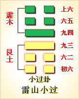

高岛易断 - 36地火明夷
高岛易断 36 地火明夷
“明出地上”，谓之"火地"；此卦反之，谓之"地火"。明出于地，光明上炎，故卦为《晋》，进也；明入于地，光明下蔽，故卦谓《明夷》，伤也。当此《明夷》之时，暗主临朝，众正并受其伤；《离》来居下，地往居上，日入地中，明受其夷。《序卦》曰："晋者，进也，进必有所伤，故受之以明夷。"是以谓之地火《明夷》。
明夷：利艰贞。
《明夷》，明受夷也。卦体上《坤》下《离》，《坤》地《离》火，火入地中，则火为土掩，火光不能上炎而生明，是火为土所克，而《离》火受伤。火既受伤，势不能出《坤》而自炫其明道，惟晦而已矣。"艰"，以敛其彩，"贞"，以匿其光，退而避伤，潜以为利，是用晦之道也，故曰"明夷，利艰贞"。
《彖传》曰：明入地中，明夷。内文明而外柔顺，以蒙大难，文王以之。利艰贞，晦其明也。内难而能正其志，箕子以之。
卦象日出地则明，日入地则暗，暗则伤明，是以《晋》卦《大象》曰"昭明"，此卦《大象》曰"用晦"。所谓变而不失其正，危而能保其安者，得此用晦之道耳。古之圣人有行之者，内修文明之德，外尽柔顺之诚，即至躬履大难，羑里受囚，七年之中，秉忠守职，无有二心，此文王之所以为文王也，谓之"内文明而外柔顺，以蒙大难，文王以之"。然文是外臣，与纣疏远，其晦犹易，又有分居宗亲，谏则受戮，去无可往，而被发佯狂，甘辱胥余，此箕子所以为箕也，谓之"内难而能正其志，箕子以之"。"内难"者，以箕子为纣之宗亲，夫以贵戚之卿遇暗主，去之则义不忍，不去则祸迫朝夕，是尤人臣之所难处。箕子能佯狂以晦其明，得以免难，是殷三仁中之最著者也。总之当纣之世，不以艰贞晦明，则被祸必烈，文王箕子之行，可谓千古人臣用晦之极则也。论二圣之行，文王箕子，易地则皆然，孔子释六十四《彖》，皆推广文王，《彖》辞之义，独于此卦称文王，抑有故也。盖"明入地中"，为文王事纣之象，文王有大明之德，而幽囚羑里，又可见"明入地中"之象。人得此卦，知时运之艰险，当固守贞正之道。《明夷》之时"利艰贞"，与他卦所言"利贞"不同，凡爻中曰"利艰贞"者，多就一爻言之，而《明夷》一卦，则全卦皆以"利艰贞"取义。《象》曰"君子用晦而明"，即"利艰贞"之旨也，其垂诫深矣。
以此卦拟人事，为当门祚衰薄，家遭不幸之时也。《坤》母在上，《离》子在下，子虽明不得于母，是《晋》文之出亡而存，宜臼之在内而诛。不明犹可，明则遭祸尤烈，古来孽子，家破身亡，类如斯焉。推之与人共事，而逢首之昏庸，为国从征，而值元戎之柔暗，有才见忌，有德被谗，不特于事无济，而且身命莫保，所谓"顽石得全，璞玉必剖"，明之害也。《明夷》一卦，要旨全在"用晦"二字，以晦藏明，明乃无害，以明用晦，晦得其正。《坤》为用，又为晦，的是用晦之义。《离》之德上炎，《离》之体中虚，中虚则足以藏明，是为"用晦而明"之象。谚语有云"闭口深藏舌，安身处处稳"，亦处世之要诀也。人生入而处家，出而谋国，不幸运际其艰，所当法《明夷》之晦，用以自全耳。
以此卦拟国家，上卦《坤》为政府，《坤》土过厚而致暗；下卦《离》为臣民，《离》火虽明而被制，明在地下，是贤臣遇暗主之象。盖身当乱世，动涉危机，才华声誉，皆足招祸，是以庸庸者受福，皎皎者被害，亦时势使然也。君子处此，常凛履薄临深之惧，倍怀韬光匿彩之思，有才而不敢自露其才，有德而务思深藏其德，或见风而早退，或明哲而保身，是谓"用晦而明"之君子也。故六爻取义不同，而其旨不外"用晦"。内三爻属《离》，为鸟，为马，为狩，鸟以高飞，马以行远，狩以献公，皆晦《离》之明，以避祸也；外三爻属《坤》，四曰"出门"可免，"入地"则凶。五为卦主，以箕子当之，皆用《坤》之顺以晦明也。此关国家兴废之大，圣如文王箕子，祗惟乐天知命，尽其臣道，以挽天心，是以六爻不言吉凶。言吉凶，转开小人趋避之门，非圣人用晦之道也。
通观此卦，《明夷》次《晋》，"晋者，进也，进而不已必伤"，时有泰否，道有显晦，时与道违，虽圣贤不能免灾。《晋》之时，明君当阳，康侯得受其宠；《明夷》之时，暗主临下，众贤并被其伤。太阳入地中，明为之所夷，故贤虽正不容，道虽直不用，仁者怀其宝，智者藏其鉴，"用晦而明"，得其旨焉。就六爻而分言之，初九为《明夷》之始，当逸民之位，见几早去，以潜藏为贞，有保身之智，如伯夷、太公是也。六二文明中正，为《离》之主，承《坤》之下，当辅相之位，以匡救为贞，守常执经，如文王是也。九三当明极生暗之交，与上六相应，通变达权，顺天应人，如武王是也。六四弃暗投明，见几而作，知上六之不可匡救，洁身而去，如微子是也。六五居《坤》阴之中，分联宗戚，职任股肱，不幸而躬逢暗主，以一身系社稷之重，能守贞正，如箕子是也。上六穷阴极晦，与日俱亡者，如商纣是也。总之，《明夷》全卦，以上六为卦主，下五爻皆为上爻所伤，就中内三爻所伤尤甚，故皆首揭"明夷"二字，以示伤害之重也。其象以上卦《晋》为日出，此卦为日落。日者君也，君以贤人为羽翼，以忠臣为股肱，以其身为元首，以亲戚大臣为腹心，乃可登天而照四国。今初爻羽翼伤，二爻股肱伤，三爻元首堕，四五腹心离，上爻之所以入地，其伤节节可睹，其象历历可危。后世人主，当取以为鉴。
《大象》曰：明入地中，明夷，君子以莅众，用晦而明。
《离》为明，坤为地，"明入地中"，光明藏而不用之象，君子则之。《坤》为众，故曰"莅众"，以御其众也。知不可不明，亦不可以过明，不明则人皆欺我，过明则物不我容，所当纳明智之德，于宽柔之中，韬其光而不露，蕴其美而自全，斯上不至妒其功，众皆得以服其化。以此履盛，盛而益显，以此涉危，危亦得安。古之圣贤，旒纩以塞聪明，树屏以蔽内外，不欲明之过用者，胥是道也。
【占】 问时运：运当大难，深宜晦藏。
○ 问战征：《象》曰"莅众"，适值用师之时，宜效明修栈道暗度陈仓之计，必得胜也。
○ 问营商：卦象艰难，大众恐难取利，暗中尚有分肥。
○ 问功名：《离》火被土所克，功名不显，显则反有灾害。
○ 问家宅：家道不顺，或父子分居，尚可保全。
○ 问婚姻：必非明媒正娶。
○ 问疾病：是肝火内郁之症，治宜熄火。
○ 问讼事：宜受曲罢讼，可以免祸。
○ 问六甲：生女。
高岛易断 初九：明夷于飞，垂其翼。君子于行，三日不食。有攸往，主人有言。
《象传》曰：君子于行，义不食也。
"于飞，垂其翼"者，谓飞鸟伤翼而下垂。"君子于行，三日不食"者，谓仓促决去，而无可得食。"有攸往"者，去此曰行，适彼曰往。"主人有言"者，谓或议其迂阔，或讽其偏固，虽未定其何辞，要不免啧有烦言也。初爻与四为害应，被四所伤，《离》为飞鸟，故取以为喻。鸟遭伤而不得安栖，欲去而避其害，故曰"明夷于飞，垂其翼"。但初当《离》之始，去上犹远，受伤尚浅，其去也，见风犹早。"三日不食"，《离》为大腹，其体中虚，中虚则腹空，不食之象。"三日"者，以《离》三爻皆明而见夷，故曰"三日"。君子接续而行，谓既去其国，不食其粟，故《传》曰"义不食也"。"君子"，谓初也；"主人"，谓四也。初与四应，四欲伤初，初为避四而远行，四见初去而有言，如初者可谓明于见几，而不受四之所伤，真善用其晦者矣。
【占】 问时运：初运不佳，惟其善自保全，得以无害。
○ 问战征：为营中粮食已尽，且宜暂退。
○ 问营商：《明夷》者，恐资本有伤，运货远行，有中途受难之象，又恐主人啧有烦言也。
○ 问功名：于飞垂翼，明示以不能腾达之象。
○ 问婚姻：初爻与四相应，而反相害，婚姻不谐。
○ 问家宅：此宅必是租典，非己屋也，故有主人；"三日不食"，有破灶不炊之象，不利，宜迁。
○ 问六甲：生女。
【例】 有友人某甲赶来，请占气运，筮得《明夷》之《谦》。
断曰：《明夷》，《离》火被《坤》土所掩，明受伤也；《离》又有离散之义。《观》足下相貌，骨间有黑气所蒙，是明被黑掩，知将与主人离散矣，故爻曰"主人有言"。玩初爻之辞，显见足下与主人不谐，意欲辞去。爻曰"于飞，垂其翼"，恐欲行而为主家所缠束，故垂翼而不能飞也。即从此他往，恐前途不利，尚有子胥吹箫之难。时运不佳，宜匿迹避祸。
【例】 明治二十八年，占我国气运，遇《明夷》之《谦》，呈之内阁总理大臣。
断曰：此卦日入地中，为昏暮之时。就我国近时论之，《离》火之文明，盛于内地，逼于外国之交际，未能如意，故曰"明夷，利艰贞"。今者我军战胜清国，余曾于本年六月初次启占，占得《需》卦，知海陆军之全胜；并料后日有三国干涉之议，外或以威武为颂扬，内实以富强生嫉妒，是各国之狡计也。今得此卦，知我军当此战胜之余，军舰或有损伤，而不适于用，兵士或有疲敝，而不可复劳，则犹如鸟之伤翼而不能飞扬，谓之"明夷于飞，垂其翼"。计欲进而相抗，无如兵力之不足何？计欲退而议和，无如国民之不服何？日夜筹思，几废寝食，谓之"三日不食"。爻象所谓"用晦而明"者，是指我所向往也；谓之"有攸往，主人有言"者，即指三国烦言也。
果哉！四月媾和之约成，同时有三国之干涉，我遂还付辽东，得偿金而结局。
高岛易断 六二：明夷于左股，用拯马壮，吉。
《象传》曰：六二之吉，顺以则也。
二为臣位，居《离》之中，与五相应，五《坤》为暗主，反欲伤害贤臣，是《明夷》之所以为《明夷》也。"左股"者，以二为股肱之臣，《管子·宙合》曰，"君立于左，臣立于右，君臣之分，左阳右阴"，以君在左，故二之所伤在左股也，故曰"明夷，夷于左股"。"用拯"者，与换初辞同，拯，救也，助也，子夏作升。二动体《乾》，《乾》为马，乾健故"马壮"，所谓用马以自拯拔也。虽伤反吉。《象传》曰"顺以则也"，《坤》为顺，以顺则之，是承乾也，即取《乾》马用拯之义。或谓二爻中虚，即内文明之象，卦属周文，文居西岐，视纣都为左，故喻取左股；文囚羑里，当时贡以文马九驷，是谓用拯实事。义殊精切。
【占】 问时运：目下运不甚佳，颇有伤残，幸得禄马相救，故吉。
○ 问战征：左营之军不利，幸马队得力，得以转败为胜。
○ 问营商：按策划不适时宜曰左计，知其营谋不合时，故有损失，幸得有马姓人出而调剂，则吉。
○ 问功名：凡官级以降曰左，似不利也；惟值午年，或交午运，则吉。
○ 问疾病：《离》二中虚，如陷进然，其人必陷入深坑；伤其左足，幸马力壮健，得一跃而出，虽伤亦吉。
○ 问家宅：必在左边柱足损伤，宜急修治。
○ 问婚姻：《离》阴象，女子恐有足疾，不良于行，宜配午命人吉。
○ 问六甲：生女。
【例】 明治二十二年，古某贵显气运，筮得《明夷》之《泰》。
断曰：《明夷》《象》曰"明入地中"，是为入夕之时。人生命运，以向明为盛，以入夕为衰。今君占气运，得《明夷》二爻，推玩爻辞所云，恐君目下运限，未免有损伤刑克。左道邪僻之徒，切不可近；行路时宜小心，防左足有跌伤之患；并虑疮疾。大运须交午运乃佳，或逢午年，或值五月，皆利。
高岛易断 九三：明夷于南狩，得其大首，不可疾贞。
《象传》曰：南狩之志，乃大得也。
三居《离》位之终，南者《离》之本位，狩者冬猎，守地而取之也。自《离》而《坤》为向西，《坤》伤明不可往，故曰"南狩"。《离》为兵戈，不曰行师，而曰狩田，亦托言从兽以自晦耳。
按：《离》卦上六，曰"王用出征，有嘉折首"，首谓魁首，是恶之大者也。今曰"得其大首"，必是兽之大者？获其大而舍其小，即圣人网开一面之意，于此可见离明之仁德也。"疾"，数也，因狩讲武，固事之正，然数数为之，非特犯从兽无厌之戒，抑且涉日讨军疲之忌，非用晦之道也，故曰"不可疾，贞"；《象传》曰"南狩之志，乃大得也"，谓当此明夷之时，犹得于田行狩，私豵献豕拜，嫌隙不生，得适其晦藏之志，亦大幸矣。一说"南狩"，谓即文王猎于南阳，得遇太公，以得大首，喻太公也。足备一解。
【占】 问时运：大运不无破败，是宜退守；交冬令，从南出行，必得大利。
○ 问战征：卦曰《明夷》，明曰进兵，必有伤败，宜潜兵从南而入。《离》上爻曰，"王用出征，有嘉折首"，即合此占。
○ 问功名：南方属文明，猎兽猎名，皆期其得。"大首"，魁首也，其必膺首选乎？故曰"志大得也"。吉。
○ 问婚姻：婚礼奠雁射雀，亦取从禽之象，"得其大首"者，谓得其嘉偶。吉。
○ 问疾病：当出避南方。吉。
○ 问失物：可就宅南寻之，必得。
○ 问六甲：生女。
○ 问家宅：此宅《离》位南向，"大首"者，一乡之大富家也。吉。
【例】 明治十六年，某商人来，请占气运，筮得《明夷》之《复》。
断曰：《明夷》，"明入地中"，《离》为日，日入《坤》土之中，明受其伤，故曰《明夷》。"夷者，伤也"，以论人生气运，是目下运被伤害，本不见佳。足下商人，以商业论之，当于冬季，可往南海道一带收卖货物，必有一种大档生意，可以获利。然不宜再往，谓之"明夷于南狩，得其大首，不可疾贞"。后果得大利云。
【例】 明治二十七年八月二十六日，占平壤进军，筮得《明夷》之《复》，乃赠之于某氏。
断曰：此卦内卦日，外卦地，是太阳旋入地中之时。古来说卦者，以此爻为武王之事，曰"于南狩，得其大首"，谓言周之伐商，得其全胜。今占平壤进兵，而得此爻，九月十五日，我军自四面围击平壤，自南而北者，为大岛少将之队，战甚苦，少将亦被铳伤，此应在《明夷》，夷，伤也。自北而南者，为佐藤大佐之队，得其大胜，陷牡丹台，逼玄武门，遂殪敌将左宝贵，敌军悉溃，十六日晓，不损一兵，而取平壤。曰"南狩"，曰"得其大首"，一一中的，《易》理之玄妙如此！
高岛易断 六四：入于左腹，获明夷之心，于出门庭。
《象传》曰：入于左腹，获心意也。
四爻出《离》入《坤》，《坤》为大腹。按卦位，《坤》在《离》之西，为左，"入于左腹"者，即入于《坤》之腹也。入其腹中，自可获其心意，乃不曰获《坤》之心，而曰"获明夷之心"；"明夷"者，合全卦而言，即为"用晦而明"之心，是能卑顺不逆，可效腹心之用者矣。"出"，出《离》也，《坤》方来，故曰"入于"；《离》已退，故曰"于出"。又初之六为《艮》，《艮》为门庭，门庭光明之地，"于出门庭"，亦即取"用晦而明"之义。一说"于出门庭"，谓即微子去之之象。《明夷》一卦，分配周兴商亡，厉历可证。
【占】 问时运：爻象出明入暗，知为不利，不宜居家，还宜出门。
○ 问战征：可潜入敌之左营，探听密计，出告大营，可胜也。
○ 问功名：功名以高升为吉，"入于左腹"，《坤》为腹，是入于地也。不吉。
○ 问营商：释名，"腹"，复也，富也。入于腹，即入于富也；获心，即称心也；"于出门庭"，是出家经商之象。
○ 问疾病：是病在心腹，恐是内损之症，宜出门求医。
○ 问家宅：此宅明堂左首，路有阻碍，出入不便。
○ 问婚姻：女子腹已有孕，不利。
○ 问六甲：生女。
【例】 缙绅某来，请占气运，筮得《明夷》之《丰》。
断曰：时运宜阳不宜阴，宜明不宜暗，卦象曰《明夷》，"明入地中"，是向暗入夜。今得第四爻，据爻辞所言，料知贵下执事中，必有腹非小人，隐探贵下心意，藉端生事，出告于长官，致长官有疑于贵下，遂使事事多有掣肘。此皆目下气运之不利也，不如退身避祸。
后依所占，转恳友人陈告长官，长官诺之，使之转任他局云。
高岛易断 六五：箕子之明夷，利贞。
［14］
《象传》曰：箕子之贞，明不可息也。
《宋世家》曰：纣为淫佚，箕子谏之不听。人或曰；可以去矣。箕子曰：谏不听而去，是彰君之恶，而自悦于民，吾不忍也。乃披发佯狂而为奴，遂隐而鼓琴。即此可见箕子之贞也。《彖传》曰，"内难而能正其志，箕子以之"，五爻居上卦之中，故属之箕子，上承《彖传》之意，以释"用晦"之义。《彖传》所谓"内难"者，以纣为同姓也；所谓"正其志"者，即"利贞"也。《象传》曰"明不可息"，谓《洪范·九畴》，其道万古常明，箕子能陈之于周，故虽暂夷而终必明也，是之谓"明不可息"也。
【占】 问时运：目下正当困厄，不失其正，久后必亨。
○ 问战征：主师不明，致有谋士逃亡之象。
○ 问营商：必历经艰苦，方可获利。
○ 问功名：时事日艰，不宜于进，只宜退守。
○ 问家宅：主亲族不和。
○ 问疾病：防有发狂之症。
○ 问婚姻：宜罢婚。
○ 问讼事：一时不直，久后自然明白。
○ 问六甲：生女。
【例】 明治十八年五月，应千家大教正之命，筮佛教之气运，得《明夷》之《既济》。
断曰：佛法者，印度之圣人，了达三世，其道法灵妙高远，世界宗教中，无出其右者也，自足昭明万世，终古不息。今占得此爻，爻辞曰"箕子之明夷，利贞"，箕子为纣庶兄，因纣无道，谏之不听，乃佯狂为奴而避位，迨周兴，陈《洪范·九畴》，得封，存殷之祀，是其道虽夷而终明也。现在佛法气运，亦犹是商道衰微之时，千家大教正，犹是当日之箕子也，当守其教道之贞，以明其宗旨之传，使释迦之圣德常明，菩提之宗风不灭，皆赖大教正之力也。《象传》曰"明不可息也"，斯之谓也！于是千家大教正叹曰："呜呼！神佛二道气运，果如此乎？不胜感悟！"
高岛易断 上六：不明，晦。初登于天，后入于地。
［15］
《象传》曰：初登于天，照四国也。后入于地，失则也。
上六居《坤》之极，为《明夷》一卦之主，是谓昏君，故"不明"而又加之曰"晦"，言昏之又昏者也。初"登天"，后"入地"，是始之自曜其明，卒之"明入于地"，为《明夷》之实象也。《彖传》所称文王箕子，其圣德之光明，岂不足以照四国？而当日文囚于羑里，箕佯狂为奴，正所谓入地者是也。故明夷之世，昏君在上，以入地者为用晦，登天者为失则。彼世之不审时势，而急求登进，光照未遍，而身败名灭，祸皆自取耳。必如文王之"柔顺""《蒙》难"，箕子之"内难""正志"，斯为善处明夷者矣。《明夷》六爻，皆教人以"用晦"之方，昏君之凶，不言可知。
【占】 问时运：初运虽好，后运不佳，万事宜作退一步想，方可无咎。
○ 问功名：宜晦藏遁迹，不宜自炫才华。
○ 问营商：货价初次太昂，落后太贱，显有天渊之隔，宜得其平。
○ 问战征：防攻山夺险，有坠入深渊之患。
○ 问婚姻：有先富后贫之嫌。
○ 问家宅：此宅面对高山，后临深渊，殊嫌地势低陷。
○ 问疾病：初患气冲，后又下泄，难治。
○ 问六甲：生女。
【例】 明治二十一年六月，余与坂田服部两氏，合谋制造摄绵土所于尾州热田，推坂田氏为社长。摄绵土制法，密合石灰与粘土，烧造而成。向来我国所用，皆仰外国输入，每年约费数十万元，设立制局，每年可减却十万元。且热田所制之品，优于外国，大得声价。二十三年春，占该社之景况，得《明夷》之《贲》。
断曰：摄绵土制法，本系粘土石灰两物，合制而成，粘土取之污湿地中，所谓"入地"者是也。不取其洁白，而取其黑泽，所谓"不明，晦"者是也。此土出地，历经工匠融化锻炼，犹如"登天"也；炼成后，用以粉墙筑地，俨然"后入于地"也。该社制出之品，工精物美，可得远售外国，即《象传》所谓"照四国也"。玩爻辞之意，合之摄绵土之制造贩行，历历相符，该社之盛行可必也。
阅数月，复占一卦，仍得前爻，益知神之所示，无有异辞，灵妙诚堪畏服。
周易 - 36地火明夷

|
 |

|

|
| 本卦 | 互卦 | 错卦 | 综卦 |
周易第三十六卦详解
明夷卦原文
明夷。利艰贞。
象曰：明入地中，明夷。君子以莅众，用晦而明。
白话文解释
明夷卦：卜问艰难之事则利。
《象辞》说：本卦内卦为离，离为日，外卦为坤，坤为地。太阳没入地中，是明夷的卦象。君子观此卦象，治民理政，不以苛察为明，而是外愚内慧，容物亲众。
《断易天机》解
明夷卦坤上离下，为坎宫游魂卦。明夷即明德被伤，象征君子受厄，此时百事宜息，静观待变。
北宋易学家邵雍解
日入地中，光明被伤；万事阻滞，等待时运。
得此卦者，时运不佳，事事劳苦，宜坚守正道，忍耐自重，等待时机。
台湾国学大儒傅佩荣解
时运：明哲保身，以避灾厄。
财运：明无利润，暗中分红。
家宅：父子分居为宜；不是明媒正娶。
身体：肝大郁积，注意保养。
传统解卦
这个卦是异卦（下离上坤）相叠。离为明，坤为顺；离为日；坤为地。日没入地，光明受损，前途不明，环境困难，宜遵时养晦，坚守正道，外愚内慧，韬光养晦。
大象：太阳掩没在坤地之下，大地黑暗，有失明之象。
运势：百事阻滞，小人加害，遇事多迷惑，宜守，静待时机而动。
事业：处于不利的环境，宜心境坦然地处置险恶的条件，增强心理素质，承受各种压力。表面柔顺小心，内心洞察事理，当离去则离去，避免灾祸，脱离危险。防患于未然，坚持逆境中奋斗。
经商：认真观察市场动态，待机行动，但须坚持商业道德，即使处于不利情况下，也要冒险向前，特别是要向南方发展，会大有收获。
求名：内心保持大志，行动刻苦忍耐，奋斗于逆境，自守其志，收敛聪明而不外露，于混乱中更应坚持正义，守愚藏拙。
婚恋：必须全面分析对方情况，不能因小失大。注意大节。
决策：处在不佳的状况下，环境困难，前途不明。但若能坦处厄运，能伸能屈，前景会变光明。尤其应加强修养，隐忍行志，外愚内慧，可以遇难呈祥。如能谨慎行事，处处小心，更能有所作为。
第三十六卦的哲学含义
明夷卦卦象，地火明夷卦的象征意义
明夷卦是异卦相叠，下卦为离，上卦为坤。离为明，坤为顺；离为日，坤为地。日没入地，光明受损，前途不明，环境困难。施于人事，则为暗主在上，明臣在下，而不敢显其明智之谓也。宜遵时养晦，坚守正道，外愚内慧，韬光养晦，以避小人之害。
明夷卦位于晋卦之后，与晋卦为正覆卦。《序卦》说："进必有所伤，故受之以明夷。夷者，伤也。"晋升或前进之中难免有所损伤，所以接着出现了明夷卦，意指光明受到伤害。程颐这样解释明夷卦与晋卦的区别："晋者明盛之卦，明君在上，群贤并进之时也。明夷昏暗之卦，暗君在上，明者见伤之时也。"
《象》中这样解释明夷卦：明入地中，"明夷"；君子以莅众，用晦而明。
《象》中指出：明夷卦的卦象是离（火）下坤（地）上，离为火，代表光明，为光明入地下之表象，象征着"光明被阻"。君子要能够遵循这个道理去管理民众，即有意不表露自己的才能和智慧，反而能在不知不觉中使民众得到治
明夷卦象征光明受阻，属于中下卦。《象》中对此卦的评断是：时乖运拙走不着，急忙过河拆了桥，恩人无义反为怨，凡事无功枉受劳。
周易第三十六卦初九爻详解
初九爻辞
初九。明夷于飞，垂其翼。君子于行，三日不食。有攸往，主人有言。
象曰：君子于行，义不食也。
白话文解释
初九："鹈鹕在飞翔，停栖在沼畔。君子离家走，三日无食粮。"筮遇此爻，有所往，则必遭主人谴责。
《象辞》说：君子在旅途中，依礼义不能蒙羞受食。
北宋易学家邵雍解
平：得此爻者，或有手足之伤，善者有进财纳福之喜。做官的有飞黄腾达之象，但谨防有失。
台湾国学大儒傅佩荣解
时运：未能腾达，善自保全。
财运：资本有损，主人烦言。
家宅：最好迁居；婚姻不谐。
身体：食道有疾，或病在手。

初九爻动变得周易第15卦：地山谦。这个卦是异卦（下艮上坤）相叠，艮为山，坤为地。地面有山，地卑（低）而山高，是为内高外低，比喻功高不自居，名高不自誉，位高不自傲。这就是谦。
初九爻的哲学含义
明夷卦第一爻，爻辞：初九：明夷于飞，垂其翼；
初九：明夷于飞，垂其翼；君子于行，三日不食。有攸往，主人有言。爻辞释义
于飞：指在飞行之中。
本爻辞的意思是：光明遭到损伤时，就像飞鸟低垂着翅膀，惊慌快行。君子若要退避隐藏，就是丢掉职位、没有饭吃也不在乎。但君子若在此时行动，必然要受到当政者的责备。
初九：明夷于飞，垂其翼；君子于行，三日不食。有攸往，主人有言。人生启示
"明夷卦"是"明入地中"，大地陷入黑暗。初九有动向，想要迅速离开，飞离此地。但是迫于时势，要"垂其翼"，希望低调保命。占得此爻者，在困难时期要保持低调，不要与人争强好胜，默默地做好手头上的事，不要着手上新的项目，也不要理会周围的流言蜚语。
《象》中说道："君子于行"，义不食也。这里指出："君子隐藏退避"是由于坚持道义和原则而不愿再拿这份俸禄了。明夷卦强调要坚守正道，对于君子来说，为了做到这一点，即使失去俸禄或钱财也不在所不惜了。
初九：明夷于飞，垂其翼。君子于行，三日不食。有攸往，主人有言。
象曰：君子于行，义不食也。
经文意思是：光明进入地中，鸟儿都回到了巢里不再飞翔。君子要离开，三天不吃东西。有所往，主人有责怪之言。象辞意思是：君子决意要离开，道义上不能再接受食祿。
明夷卦是从小过卦变化而来，小过卦的九四爻与初六爻互换，便成为明夷卦。小过卦有飞鸟的形象，小过的初六为鸟翼，现在来到了明夷卦六四的位置，所以有鸟收拢双翼的形象（即垂其翼）。
周易第三十六卦九二爻详解
六二爻辞
六二。明夷，夷于左股，用拯马壮，吉。
象曰：六二之吉，顺以则也。
白话文解释
六二：鹈鹕，鹈鹕，伤于左股，君子负伤，因马获救。吉利。
《象辞》说：
六二爻辞
所讲的吉利，是因为六二阴爻处于九三阳爻之下，正像马顺从主人善体人意。
北宋易学家邵雍解
吉：得此爻者，常人或有难，但会得贵人之助。做官的会有实权，能当大任。读书人会取得好成绩。
台湾国学大儒傅佩荣解
时运：贵人相助，幸免于难。
财运：策划不当，难免损失。
家宅：修缮完整；妇有足疾。
身体：左足受伤。

六二爻动变得周易第11卦：地天泰。这个卦是异卦（下乾上坤）相叠，乾为天，为阳；坤为地，为阴，阴阳交感，上下互通，天地相交，万物纷纭。反之则凶，万事万物，皆对立，转化，盛极必衰，衰而转盛，故应时而变者泰（通）。
九二爻
的哲学含义
明夷卦第二爻，爻辞：六二：明夷，夷于左股，用拯马壮，吉。爻辞释义
左股：左边大腿。拯：拯救。马壮：指壮马。
从卦象上看，六二这一爻属于阴爻居柔位，得势，守中得正。六二具有柔顺中正的特性，这种人在昏暗之时，更容易被人欺侮，所以会受到伤害。不过由于这一爻守中得正，会有人前来相助，从而获吉。
《象》中分析此爻道：六二之吉，顺而则也。这里指出：六二爻之所以能够获得吉祥，是因为它柔顺而又坚持原则。
占得此爻者，当处境进一步恶化时，你的活动会受到制约。这时若是有强有力的朋友来帮助，可以帮助你减轻压力。
如果在单位里，可能遇到这样的情况：身边辅佐的人员受到了伤害，应当赶快补充强有力的人来解救危难局面，这就有如伤及左腿时，要以强壮的马来拯救一样，这样方能脱离险境，逢凶化吉。
六二：明夷，夷于左股，用拯马壮，吉。
象曰：六二之吉，顺以则也。
经文意思是：光明进入地中，左股受伤，有强壮的马来拯救，吉祥。象辞意思是：六二爻的吉祥，是由于他即顺从又有原则。
这就好比一个人走夜路，结果把大腿摔伤了。可是由于自己有一匹强壮的马，所以被马所拯救。遇险而有救，所以最终吉祥。六二爻是明夷卦下互卦坎卦的下爻，坎为美脊马、曳马，又代表险，所以有遇险而有马救的爻辞。马是极其通人性的，在故事片中我们会经常看到马怎样救主人的情景。有这样一匹好马，他的主人当然会吉祥了。
周易第三十六卦九三爻详解详解
九三爻辞
九三。明夷于南狩，得其大首，不可疾，贞。
象曰：南狩之志，乃大得也。
白话文解释
九三：在南方的猎区，拉弓射箭，获得一些大野兽。筮遇此爻，占问疾病则不利。
《象辞》说：决心在南方狩猎，大称其意。
北宋易学家邵雍解
平：得此爻者，有修屋宇造作之兆。不良者，左股或有伤，多忧愁分离之患。
台湾国学大儒傅佩荣解
时运：退守南方，可以得志。
财运：耐心经营，终见光明。
家宅：乡里富家；得其佳偶。
身体：南方修养较宜。
九三爻动变得周易第24卦：地雷复。这个卦是异卦（下震上坤）相叠。震为雷、为动；坤为地、为顺，动则顺，顺其自然。动在顺中，内阳外阴，循序运动，进退自如，利于前进。
九三爻
的哲学含义
明夷卦第三爻，爻辞：九三：明夷于南狩，得其大首；不可疾，贞。爻辞释义
狩：指狩猎。大首：指首领。疾：指急切。
明夷卦第三爻，爻辞：九三：明夷于南狩，得其大首；不可疾，贞。人生启示
从卦象上看，九三爻属于阳爻居刚位，得位。阳爻具有好动、积极向上的特性，九三在下卦的终位，既有动向又心存光明，可以付诸行动。
《象》中这样分析本爻：南狩之志，乃大得也。这里指出：有到南方征伐巡狩的志向，就会有非常大的收获。
占得此爻者，虽然在艰难之中，但仍然可以有所作为，只要不操之过急，行动仍然能有所收获。
九三：明夷于南狩，得其大首，不可疾，贞。
象曰：南狩之志，乃大得也。
经文意思是：光明进入地中，在南方狩猎，捕捉到大首领，不可操之过急，坚守正道。象舌羊意思是：南方狩猎的事件，说明可以得到大的收获。
天黑了，动物们都在熟睡，这种情况去捕捉动物，则更容易获取猎物。然而相对于战争来说，夜袭也是一种极容易克敌制胜的战术。爻辞中所描述的便是一次成功的夜袭经过。不但打败了敌人，而且还俘获了敌人的头领。但是在这种情况下，由于黑暗不明，所以不利于穷追不舍，将敌人斩尽杀绝，所以"不可疾"。
爻辞中之所以"南狩"，主要是因为九三是明夷卦的下卦离卦的最上爻，离在文王八卦方位图中代表南方。
周易第三十六卦九四爻详解详解
六四爻辞
六四。入于左腹，获明夷之心，出于门庭。
象曰：入于左腹，获心意也。
白话文解释
六四：回到深隐之处吧！走出居室，进入社会，就感到环境的险恶，退隐的念头油然而生。
《象辞》说：回到深隐之处，就满足了退隐的心意。
北宋易学家邵雍解
平：得此爻者，出外营谋者会顺利，妇人有孕者生男，不良者或生心腹之疾。做官的闲职者会复职，在职者，多出外任职，韬光养晦者必出身成名。
台湾国学大儒傅佩荣解
时运：出明入暗，出门为宜。
财运：外出经商，称心致富。
家宅：路有阻碍；妇已有孕。
身体：心腹之症，出门求医。

六四爻动变得周易第55卦：雷火丰。这个卦是异卦（下离上震）相叠，电闪雷鸣，成就巨大，喻达到顶峰，如日中天。告戒：务必注意事物向相反方面发展，盛衰无常，不可不警惕。
九四爻
的哲学含义
明夷卦第四爻，爻辞：六四：入于左腹，获明夷之心，于出门庭。爻辞释义
本爻辞的意思是：进入左方腹部，能够深入了解光明被阻的内部情况，于是坚定地跨出门庭，离开这里。
从卦象上看，六四爻属于阴爻居柔位，位居上卦之初。明夷卦的昏暗在上卦，所说六四已经进入了昏暗之中。
《象》中这样分析道："入于左腹"，获心意也。这里指出：六四爻已经"进入左方腹部"，因此能够从内部深刻了解光明受阻的情形，了解到昏暗之君的心思与用意，然后决定离去，就像商朝时微子了解了商纣王之后，离开朝廷一样。
占得此爻者，陷入了困境之中，而且了解到了困境形成的原因：可能是领导昏庸，可能是小人当道。这时要下定决心，离开是非之地。当然，在这种最黑暗的时候，仍然要心存光明，坚守正道，这样才能重新被理解和重用。
六四：入于左腹，获明夷之心，出于门庭象曰：入于左腹，获心意也。
经文意思是：进入近臣内侧，获悉光明损伤的内情，走出了院子象辞意思是：进入近臣内侧，可以获得君王的真实想法。
周易第三十六卦九五爻详解详解
六五爻辞
六五。箕子之明夷，利贞。
象曰：箕子之贞，明不可息也。
白话文解释
六五：殷亡后，箕子逃到东方邻国避难，卜问得吉兆。
《象辞》说：箕子退隐守正，他的光辉形像千古不灭。
北宋易学家邵雍解
平：得此爻者，难逢知己，或有家难之祸。做官的须修德养性可保无忧。
台湾国学大儒傅佩荣解
时运：君子固穷，未来通达。
财运：历经艰难，方可获利。
家宅：亲族失和；罢婚为宜。
身体：精神症状。
六五爻动变得周易第63卦：水火既济。这个卦是异卦（下离上坎）相叠。坎为水，离为火，水火相交，水在火上，水势压倒火势，救火大功告成。既，已经；济，成也。既济就是事情已经成功，但终将发生变故。
九五爻
的哲学含义
明夷卦第五爻，爻辞：六五：箕子之明夷，利贞。爻辞释义
箕子：是商纣王的叔父。《韩非子？喻老》篇载："昔者纣为象箸而箕子怖"。商纣王让人给自己做了一双象牙筷子，别人不以为然，箕子知道后就感到很可怕。箕子说道："用象牙筷子吃饭就一定不肯用粗碗具，必将犀玉杯盘、山珍海味，进而穿绫着缎、建高阔殿宇楼台，如此下去将一发不可收拾。"后来，纣王越发奢侈淫佚，箕子屡谏而纣王不听。有人劝箕子说："这个国家已经无可救药了，快走吧。"箕子回答道："为人臣谏不听而去，是彰君之恶而自说於民，吾不忍为也。"他认为作为一个臣子，进谏规劝君王的不合规矩的言行是自己的责任，君王不听谏，因此要离开君王，这样的做法就是要彰显君主的恶性恶德，标榜自己以取悦于民，自己不能这么做。
箕子在这里遵循了隐恶扬善的原则，这是古代倡导的正人君子所要坚守的美德。作为一个君子，不能整天掀起是非，不能哗众取宠。箕子没有选择离去，又不想助纣为虐，他披散着头发，佯装发狂。后来被商纣王贬为家奴，他就在箕山这个地方隐居下来，经常鼓琴悲怆地歌唱，后人将他歌唱的曲子纪录下来，名为《箕子操》。
在昏暗的专制社会，一个臣子若想不助纣为虐并能安全地活下来，是非常艰难的。箕子在这种情况下，不惜牺牲物质利益、权力和个人名誉，而等待昏暗的过去，光明的到来。他终于等到了这一天，后来周武王打败纣王后，曾经恭恭敬敬、诚惶诚恐地求教于箕子。箕子就把洪范九畴治国大道传授给周武王。
本爻辞的意思是：应采取箕子那种自掩其聪明才智的做法，这样做有利于坚守正道。
周易第三十六卦上九爻详解详解
六五爻辞
六五。箕子之明夷，利贞。
象曰：箕子之贞，明不可息也。
白话文解释
六五：殷亡后，箕子逃到东方邻国避难，卜问得吉兆。
《象辞》说：箕子退隐守正，他的光辉形像千古不灭。
北宋易学家邵雍解
平：得此爻者，难逢知己，或有家难之祸。做官的须修德养性可保无忧。
台湾国学大儒傅佩荣解
时运：君子固穷，未来通达。
财运：历经艰难，方可获利。
家宅：亲族失和；罢婚为宜。
身体：精神症状。

上九爻
的哲学含义
明夷卦第六爻，爻辞：上六：不明，晦；初登于天，后入于地。爻辞释义
晦：含有黑暗和昏庸之意。
本爻辞的意思是：没有光明，一片晦暗。起初升到天上，后来陷入地下。
上六爻位于全卦的顶端，代表的是最黑暗之时。五爻与上爻属于上天之位，天上应该有太阳，照射四方的。可是上位者昏庸，不守正道，结果光明"陷入地下"。
《象》中这样解释本爻："初登于天"，照四国也；"后入于地"失则也。这里指出："超初升到天上"，是说它的光明能够普照四方各国；"后来陷入地下"，是说它已经因违背正道而丧失了应有的作用，由光明转入了黑暗。
占得此爻者，所处的集团或单位之中，领导昏庸，小人当道，身陷昏暗之上六：不明，晦，初登于天，后入于地。
象曰：初登于天，照四国也。后入于地，失则也。
经文意思是：不光明，晦暗。起初升上天空，后来落在地上。
象辞意思是：起初升上天空，可以光耀四方。后来落在地上，是失去了法则。
上六处于黑暗的极至之处，而最黑暗的时代，同时也是光明快要来临的时代。这就是所谓的黎明前的黑暗。所以在这里，向人们说明了光明与黑暗的轮回与交替现象。"初登于天"，描写的是日出；
"后入于地"，描写的是日落。所以在最黑暗的时刻，要明白光明就要来临了。
象辞对爻辞作进一步的发挥，认为日落导致的黑暗，是因为失去了法则造成的。在这里的日落，已不是我们在傍晚所看到的日落，而指的是一种政治上朋夷卦的腐败，是文明制度的日落，是黑暗腐败的意思。